Fundos de Tela


Quer ter sua arte exposta como fundo de tela?
Envie um email: felipe.neiva@ifg.edu.brContendo a imagem, seu nome, e vínculo com o IFG.
----------------------------------------------------------------------------------------------------
Contribuintes:
Anna Luyza Ataides - Audio e Vídeo
Maya dos Anjos - Audio e Vídeo
Joaquim Karaja - Audio e Vídeo
Maria Clara - Audio e Vídeo
Adriana Coinbra - Assistente de aluno
Felipe Neiva - Tec.Lab. Informática
NPDflix
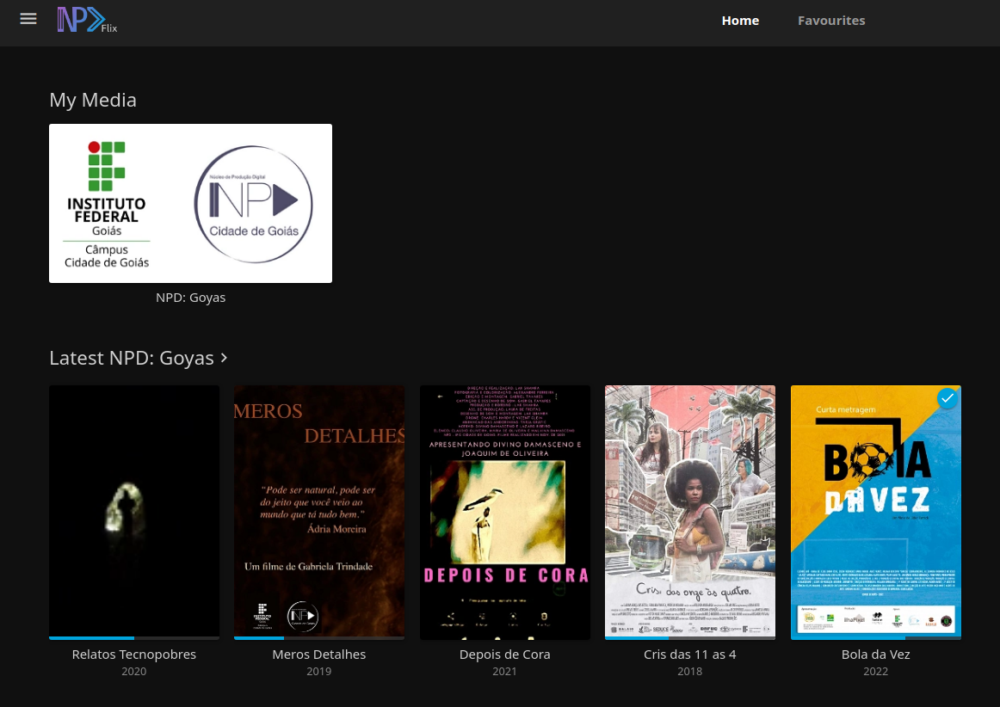
NPDflix é um servidor de streaming com trabalhos produzidos no IFG e NPD.
O sistema também suporta ebooks funcionando como uma biblioteca de leitura virtual.https://npd.goias.ifg.edu.br/
----------------------------------------------------------------------------------------------------
Quer ter sua produção no NPDflix?
Envie um email: felipe.neiva@ifg.edu.brContendo o link para o arquivo de video, seu nome, e vínculo com o IFG.
Radio Vozzes
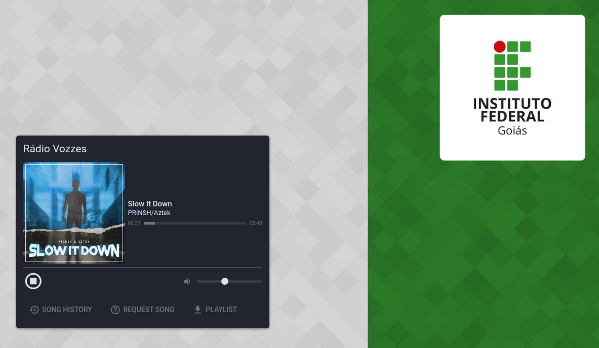
A Radio Vozzes é a rádio interna que toca no pátio do IFG.
https://radio.goias.ifg.edu.br/
----------------------------------------------------------------------------------------------------
Quer ter sua música tocando na Radio Vozzes?
Envie um email: felipe.neiva@ifg.edu.brContendo o mp3 da musica, seu nome, e vínculo com o IFG.
Documentos e Planilhas
OnlyOffice

OnlyOffice é uma suíte de escritório de interface intuitiva.
Oferece processador de texto, planilha, e ferramentas de apresentação.Saiba mais...
----------------------------------------------------------------------------------------------------
LibreOffice
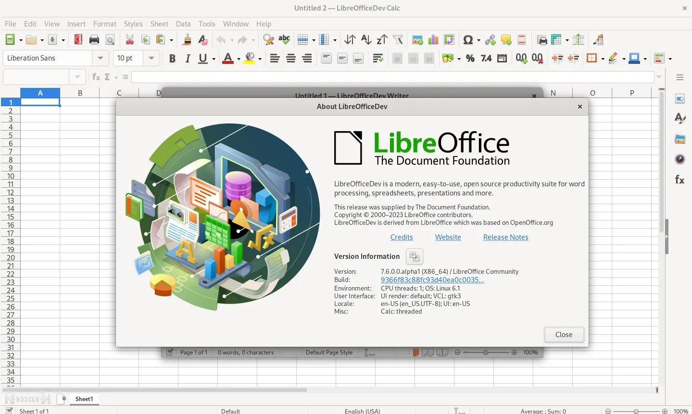
LibreOffice é uma suíte de escritório robusta
Inclui processador de texto, planilha, e ferramentas de apresentação.Saiba mais...
----------------------------------------------------------------------------------------------------
Evince
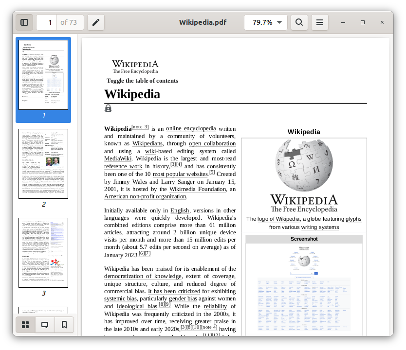
Evince é um visualizador de documentos para múltiplos formatos.
PDF, PostScript, e outros.Saiba mais...
----------------------------------------------------------------------------------------------------
PDF Arranger
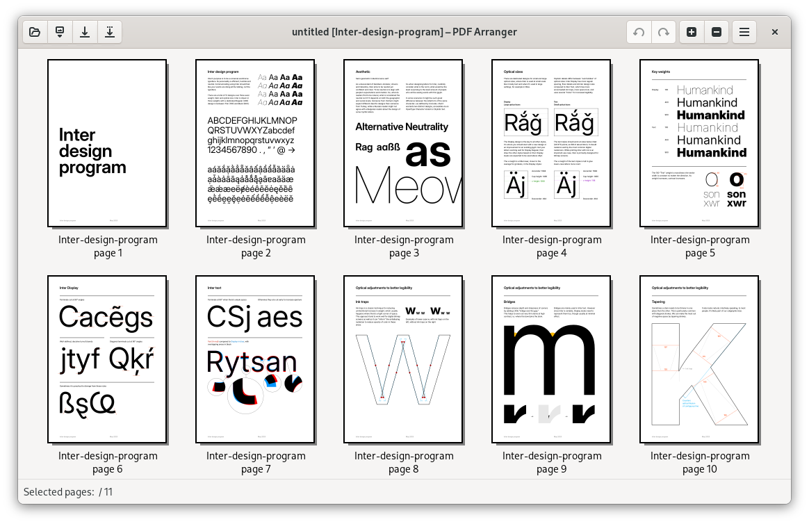
PDF Arranger é uma ferramenta para organizar e editar arquivos PDF.
Combine, divida, e reordene páginas facilmente.Saiba mais...
Diagramação e Roteiro
KIT Scenarist

O KIT Scenarist é uma ferramenta poderosa para escritores de roteiros.
Ele oferece recursos abrangentes para o desenvolvimento de roteiros, facilitando o processo de criação para escritores e cineastas.Saiba mais...
----------------------------------------------------------------------------------------------------
Scribus
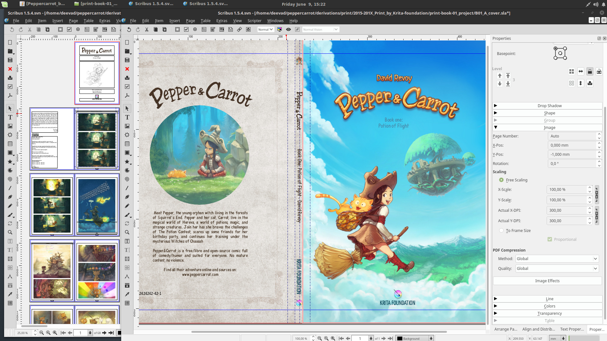
O Scribus é um software de editoração eletrônica
Permite a criação de layouts e diagramação profissionais.É uma ferramenta poderosa para design gráfico e publicação, oferecendo recursos avançados para criar documentos impressos e digitais.
Saiba mais...
Navegadores e Internet
Brave

Brave é um navegador focado em privacidade e velocidade.
Bloqueia anúncios e rastreadores por padrão.Saiba mais...
----------------------------------------------------------------------------------------------------
Firefox

Firefox é um navegador livre e de código aberto.
Focado em privacidade e personalização.Saiba mais...
----------------------------------------------------------------------------------------------------
FreeTube
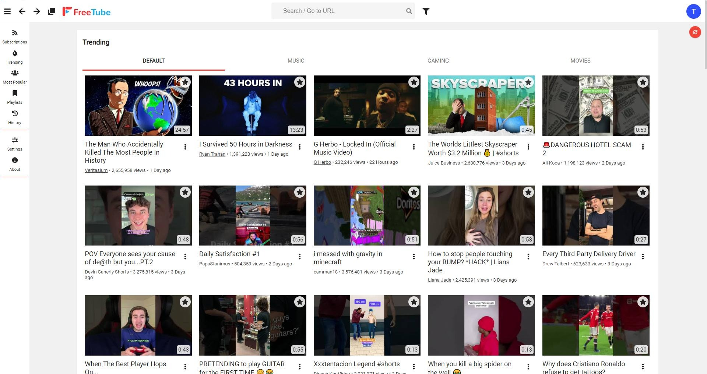
FreeTube é um aplicativo de desktop para assistir vídeos do YouTube.
Focado em privacidade e com funções de download.Saiba mais...
----------------------------------------------------------------------------------------------------
Ferdium
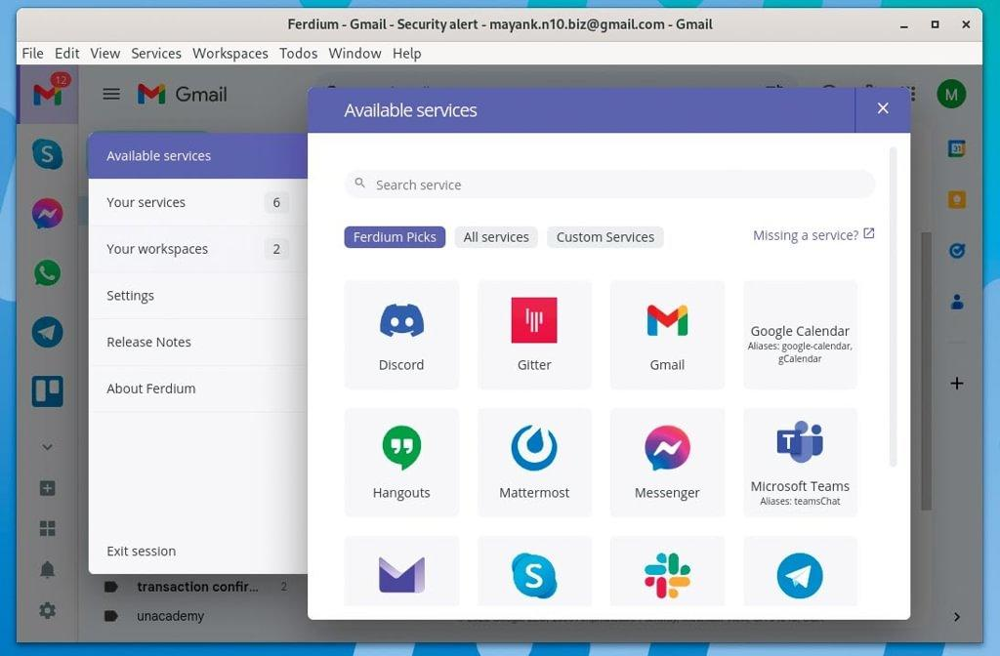
Ferdium é um aplicativo de gerenciamento de aplicativos de mensagens e redes sociais.
Centralize suas comunicações em uma única interface.Saiba mais...
----------------------------------------------------------------------------------------------------
Muffon
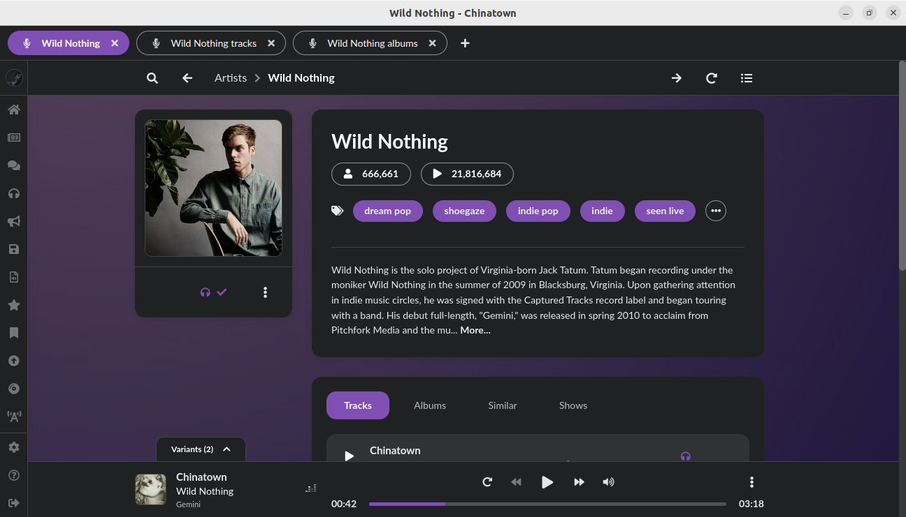
Muffon é uma plataforma de streaming de música.
Descubra, ouça e compartilhe suas músicas favoritas.Saiba mais...
----------------------------------------------------------------------------------------------------
DroidCam
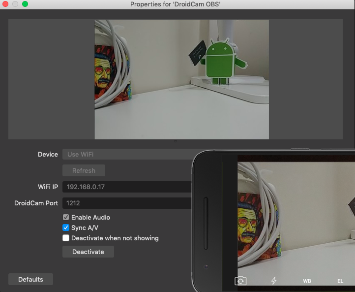
DroidCam é um aplicativo que transforma seu smartphone em uma webcam.
Ideal para videochamadas e transmissões ao vivo.Saiba mais...
----------------------------------------------------------------------------------------------------
Thunderbird
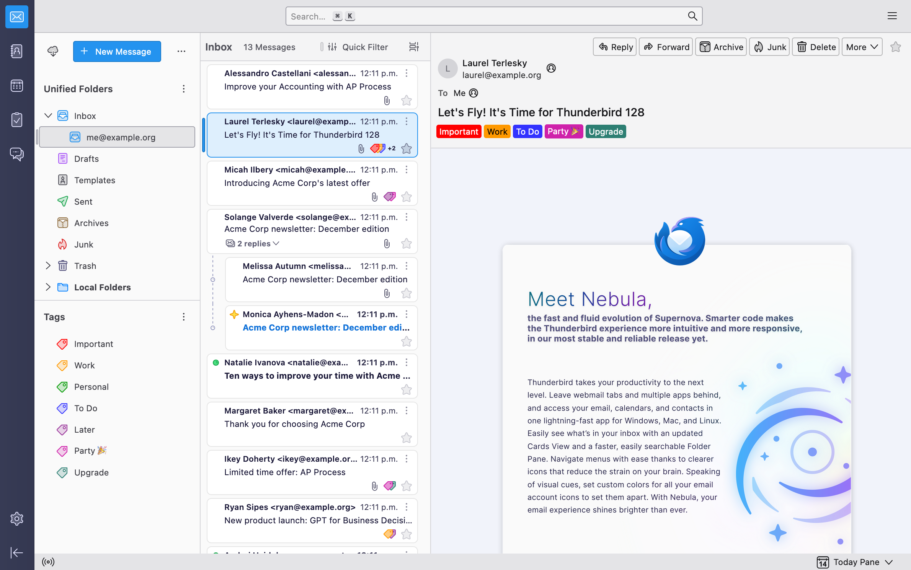
Thunderbird é um cliente de e-mail e gerenciamento de notícias.
Oferece uma interface intuitiva e suporte a várias contas.Saiba mais...
VFX e 3D
Blender 3.6-LTS
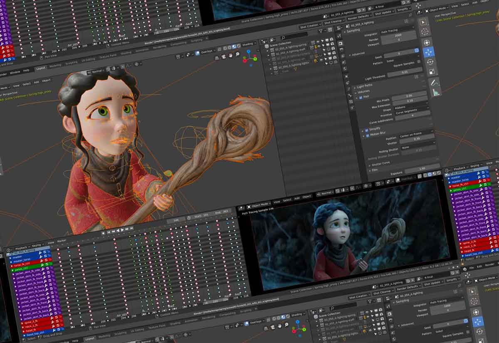
Blender é uma poderosa ferramenta de modelagem 3D e animação.
Ideal para artistas, animadores e designers.Saiba mais...
----------------------------------------------------------------------------------------------------
Natron
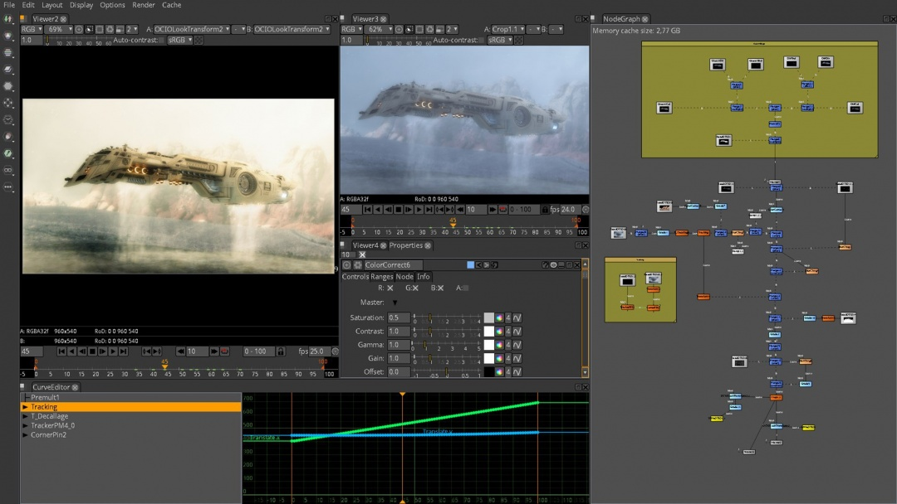
O Natron é um software de composição de vídeo.
Com interface semelhante ao Nuke, ele oferece uma variedade de ferramentas poderosas para edição e composição de vídeo.Saiba mais...
----------------------------------------------------------------------------------------------------
Gyroflow
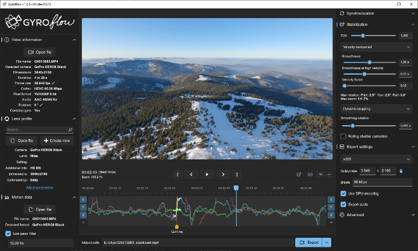
Gyroflow é um software de estabilização de vídeo baseado em dados de giroscópio.
Ideal para vídeos de ação e gravações com movimento intenso.Saiba mais...
Animação
OpenToonz
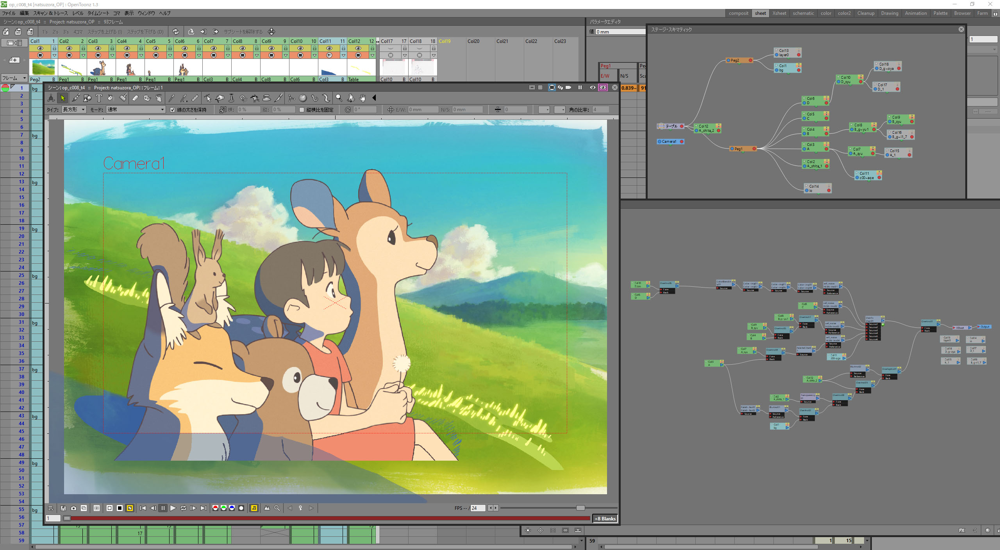
OpenToonz é um software de animação 2D.
Oferece ferramentas avançadas para artistas e animadores.Saiba mais...
----------------------------------------------------------------------------------------------------
Pencil2D
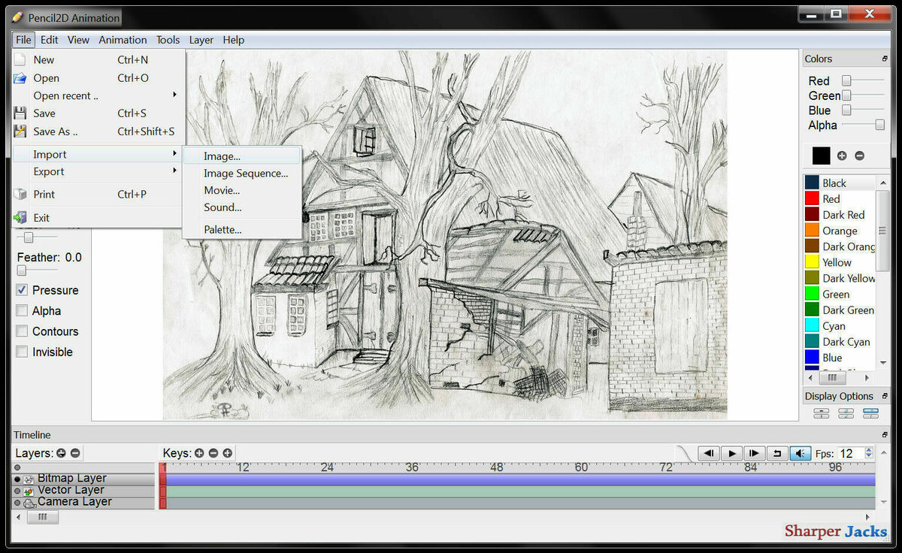
Pencil2D é um software de animação 2D.
Permite criar animações desenhadas à mão de forma simples e intuitiva.Saiba mais...
----------------------------------------------------------------------------------------------------
Synfig

Synfig é um software de animação 2D.
Oferece uma abordagem poderosa para criar animações vetoriais.Saiba mais...
----------------------------------------------------------------------------------------------------
Glaxnimate
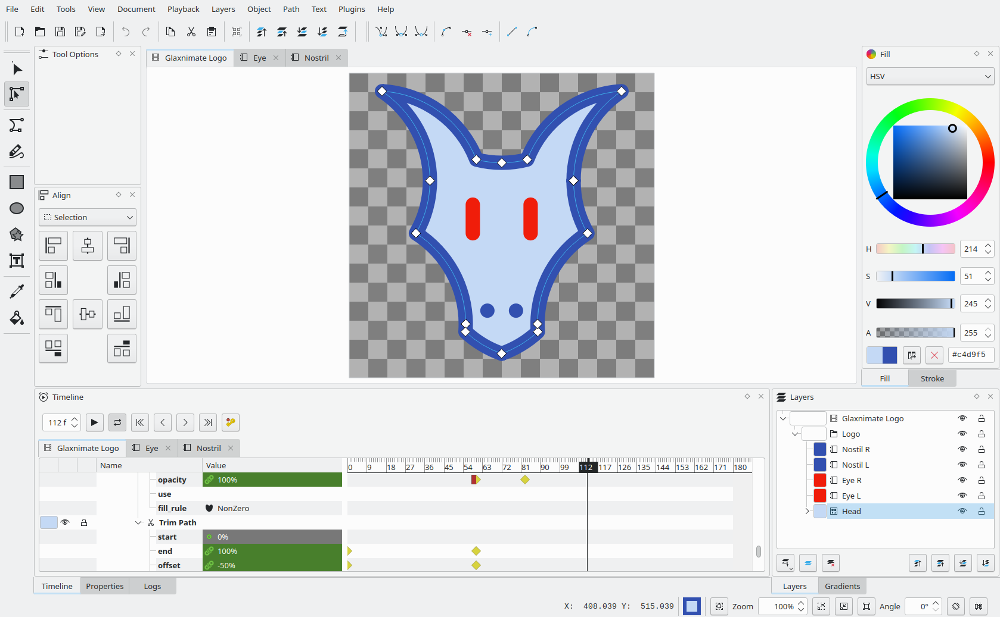
Glaxnimate é um software de animação vetorial 2D.
Focado em facilitar a criação de animações de forma intuitiva.Saiba mais...
Foto e Imagem
GIMP

GIMP é um software de edição de imagens.
Oferece ferramentas avançadas para manipulação de fotos e design gráfico.Saiba mais...
----------------------------------------------------------------------------------------------------
Inkscape

Inkscape é um software de edição vetorial.
Ideal para design gráfico e ilustração com uma ampla gama de ferramentas.Saiba mais...
----------------------------------------------------------------------------------------------------
Krita
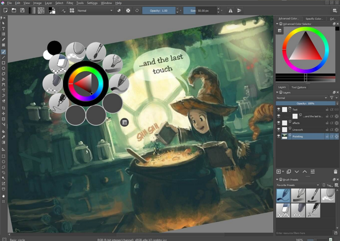
Krita é um software de pintura digital.
Focado em ilustração e animação, oferece uma ampla gama de ferramentas artísticas.Saiba mais...
----------------------------------------------------------------------------------------------------
Darktable

Darktable é um software de edição de fotos.
Ideal para fotógrafos, oferece ferramentas avançadas de pós-processamento.Saiba mais...
----------------------------------------------------------------------------------------------------
RawTherapee
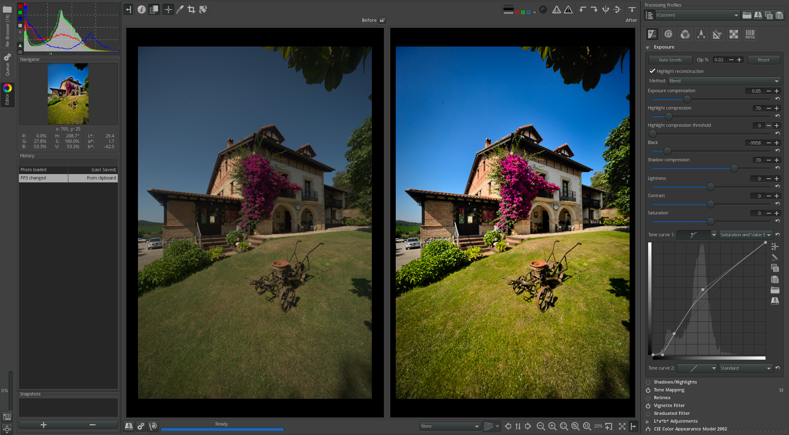
RawTherapee é um software de processamento de imagens RAW.
Oferece ferramentas avançadas para edição e ajuste de fotografias.Saiba mais...
----------------------------------------------------------------------------------------------------
Pixelorama
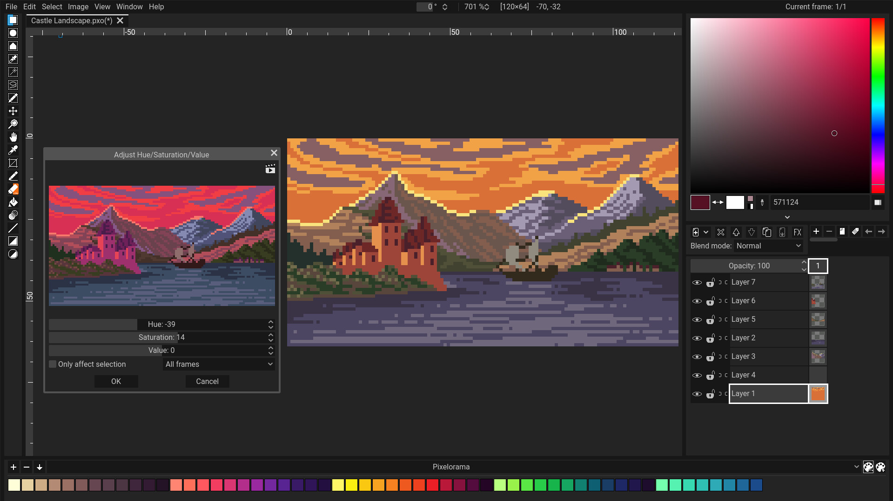
Pixelorama é um software de edição de pixel art.
Permite criar e animar arte em pixel de maneira intuitiva.Saiba mais...
----------------------------------------------------------------------------------------------------
Shotwell
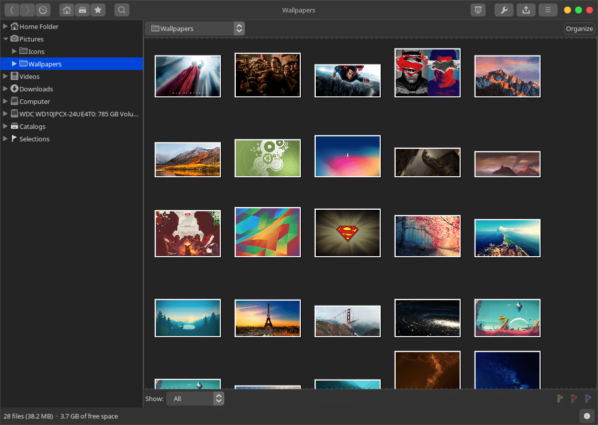
Shotwell é um gerenciador de fotos.
Permite organizar, editar e compartilhar suas fotos facilmente.Saiba mais...
Video e Edição
Kdenlive
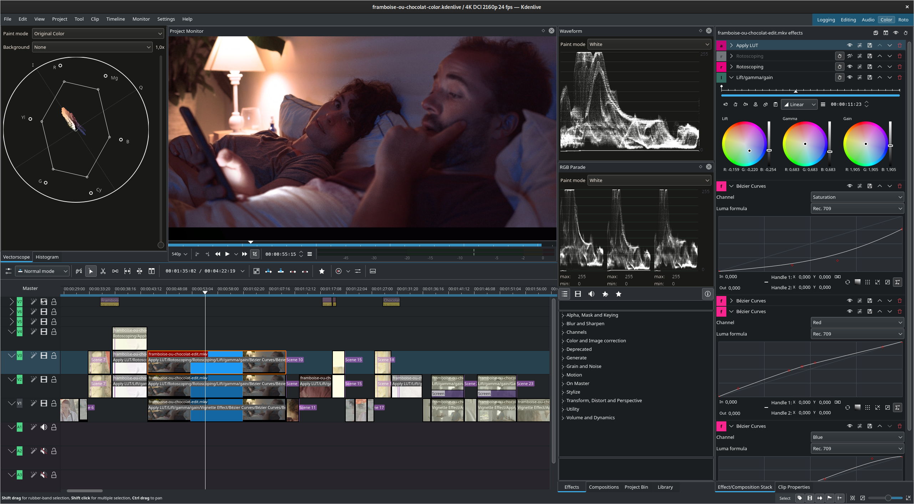
Kdenlive é um software de edição de vídeo.
Oferece uma interface intuitiva e ferramentas avançadas para edição de vídeos.Saiba mais...
----------------------------------------------------------------------------------------------------
Shotcut
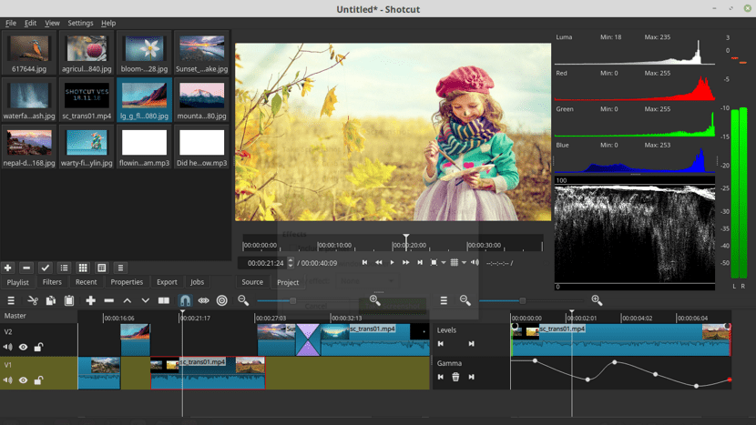
Shotcut é um editor de vídeo e multiplataforma.
Oferece uma ampla gama de recursos e uma interface intuitiva.Saiba mais...
----------------------------------------------------------------------------------------------------
Flowblade
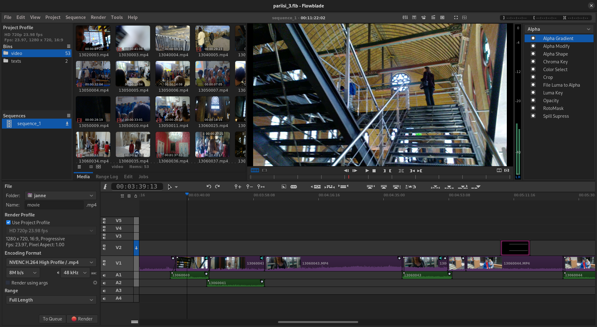
Flowblade é um editor de vídeo não linear de código aberto.
Focado em edição rápida e fácil de vídeos com uma interface intuitiva.Saiba mais...
----------------------------------------------------------------------------------------------------
OBS Studio

OBS Studio é um software de gravação e transmissão ao vivo.
Ideal para criadores de conteúdo, oferece recursos avançados de captura e edição.Saiba mais...
----------------------------------------------------------------------------------------------------
VLC Media Player
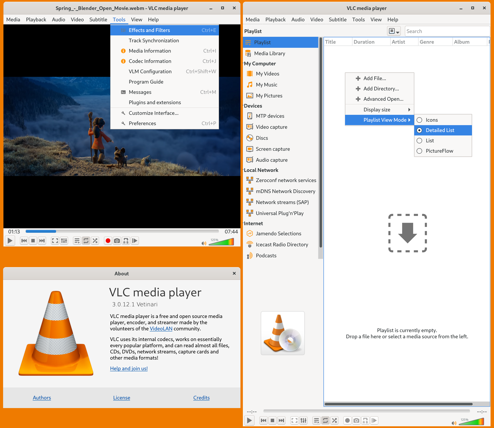
VLC é um reprodutor de mídia multiplataforma.
Suporta uma ampla variedade de formatos de áudio e vídeo.Saiba mais...
----------------------------------------------------------------------------------------------------
HandBrake

HandBrake é um conversor de vídeo de código aberto e multiplataforma.
Ideal para converter vídeos em vários formatos com facilidade.Saiba mais...
Áudio
Audacity

Audacity é um software de edição de áudio.
Ideal para gravar, editar e mixar faixas de áudio com uma interface intuitiva.Saiba mais...
----------------------------------------------------------------------------------------------------
Ardour

Ardour é uma estação de trabalho de áudio digital (DAW).
Ideal para gravar, editar e mixar áudio de forma profissional.Saiba mais...
----------------------------------------------------------------------------------------------------
LMMS

LMMS é um software de produção musical.
Permite compor, editar e produzir música com uma interface intuitiva.Saiba mais...
----------------------------------------------------------------------------------------------------
Bespoke Synth
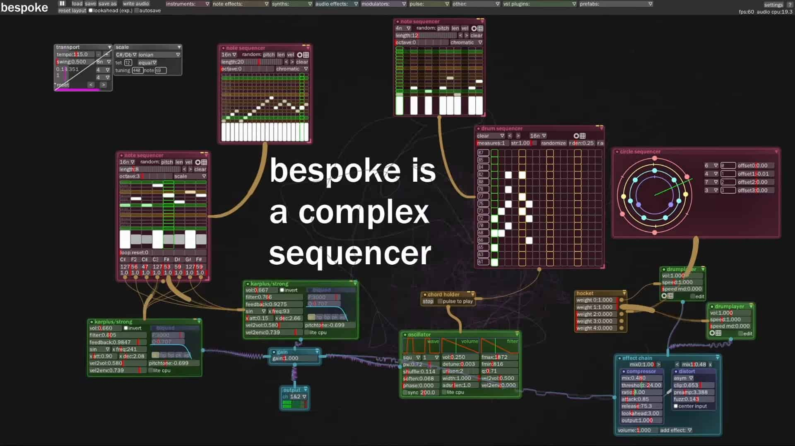
Bespoke Synth é um ambiente de criação de música modular.
Permite personalizar e criar suas próprias ferramentas de síntese sonora.Saiba mais...
----------------------------------------------------------------------------------------------------
Carla
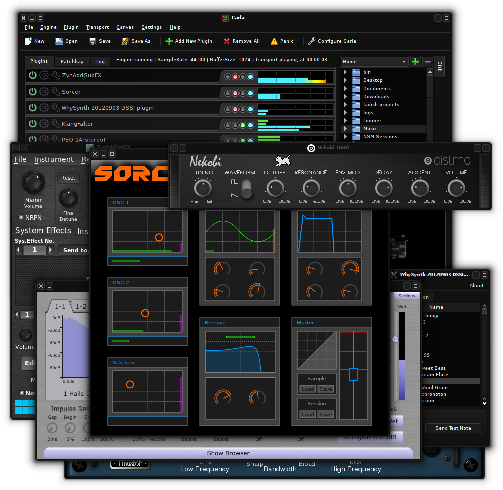
Carla é um host de plugins de áudio modular.
Ideal para integrar e gerenciar plugins de efeitos e instrumentos de forma flexível.Saiba mais...
----------------------------------------------------------------------------------------------------
Mixxx

Mixxx é um software de DJ.
Permite mixar músicas e criar sets ao vivo com uma variedade de ferramentas.Saiba mais...
----------------------------------------------------------------------------------------------------
Elisa
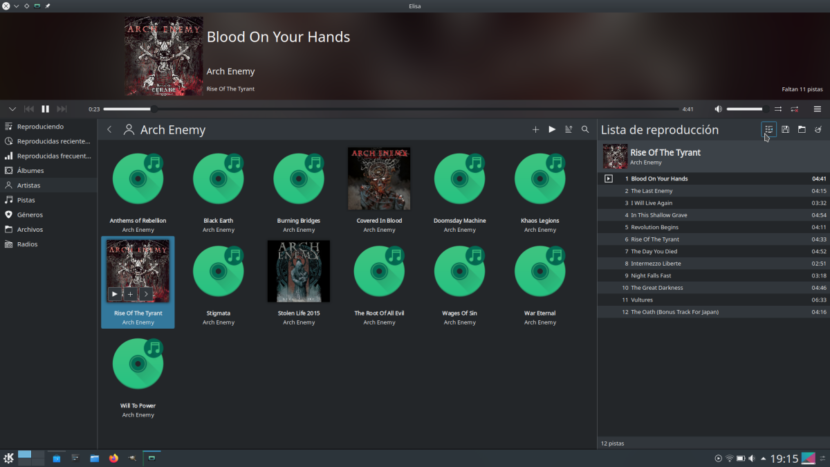
Elisa é um reprodutor de música moderno.
Oferece uma interface limpa e intuitiva para gerenciar suas playlists.Saiba mais...
Geotecnologia
Google Earth
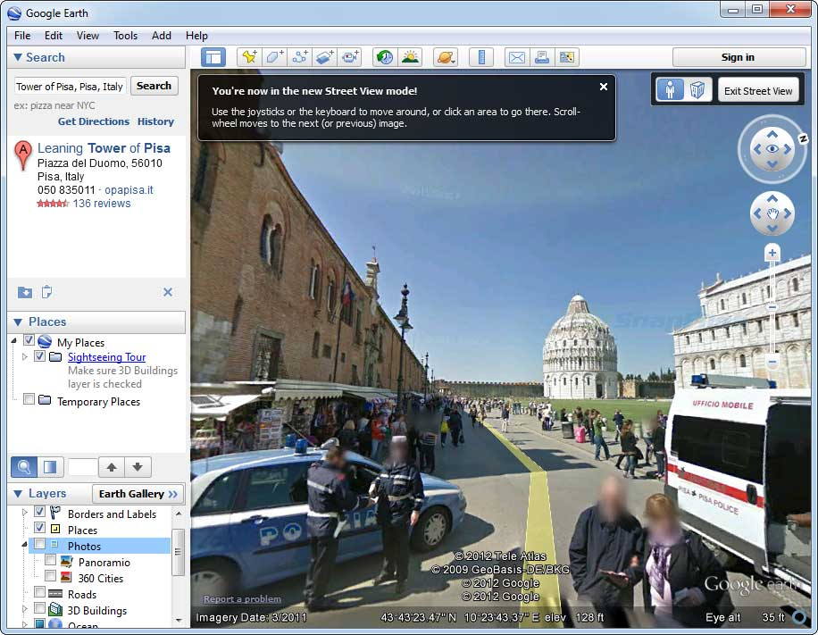
Google Earth é um aplicativo de visualização geográfica.
Permite explorar o mundo em 3D, visualizar mapas e satélites interativos.Saiba mais...
----------------------------------------------------------------------------------------------------
Marble

Marble é um aplicativo de mapeamento e navegação de código aberto.
Permite explorar mapas, rotas e informações geográficas de forma interativa.Saiba mais...
----------------------------------------------------------------------------------------------------
QGIS

O QGIS (Quantum GIS) é um sistema de informações geográficas
Permite visualizar, editar e analisar dados geoespaciais.É uma ferramenta versátil para profissionais de GIS.
Saiba mais...
----------------------------------------------------------------------------------------------------
SAGA GIS
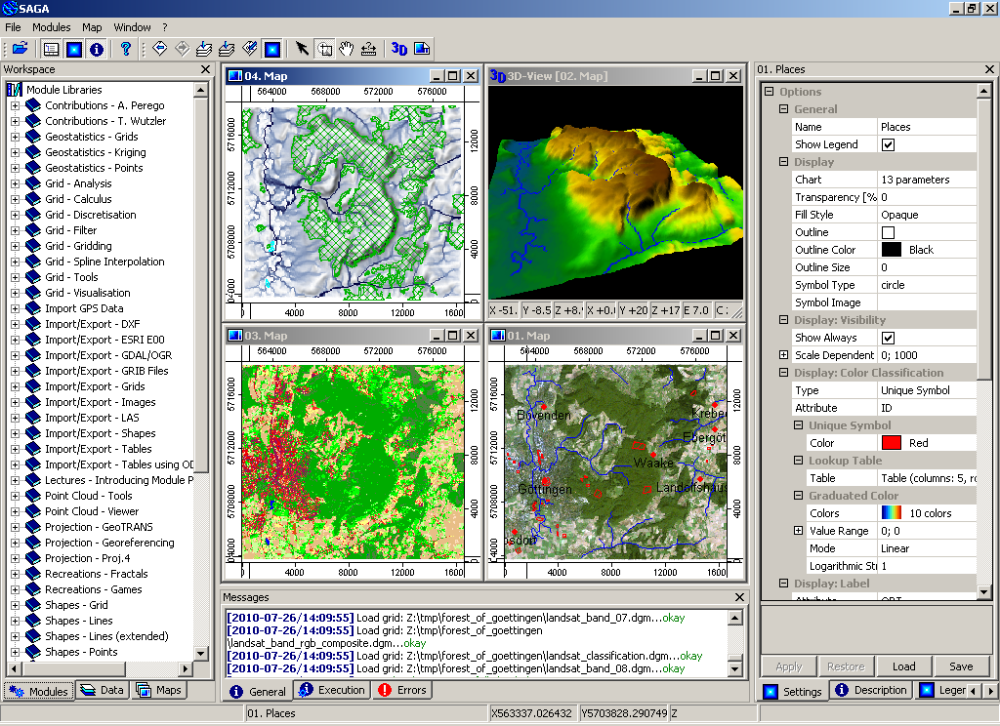
SAGA GIS é um sistema de informações geográficas.
Focado em análise geoespacial e processamento de dados raster e vetoriais.Saiba mais...
----------------------------------------------------------------------------------------------------
SISVAR
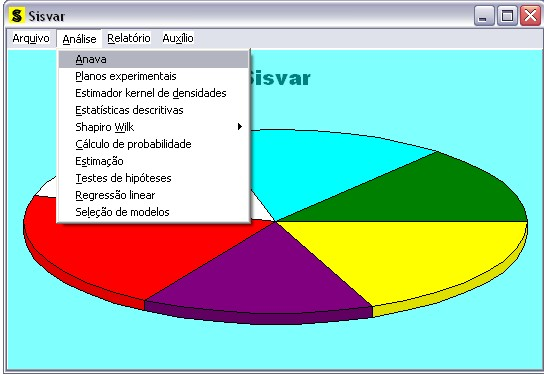
SISVAR é um software para análise de variância e estatística agrícola.
Permite realizar testes estatísticos de forma fácil e intuitiva.Saiba mais...
CAD
LibreCAD
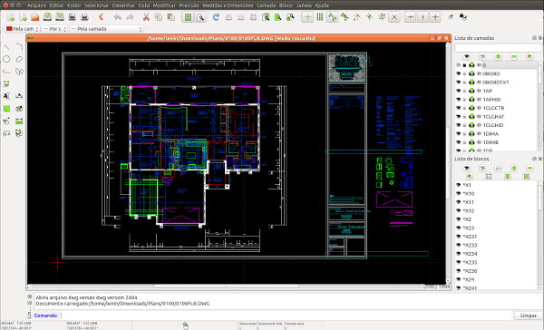
LibreCAD é um software de CAD 2D.
Ideal para criação e edição de desenhos técnicos e arquitetônicos.Saiba mais...
----------------------------------------------------------------------------------------------------
QCAD
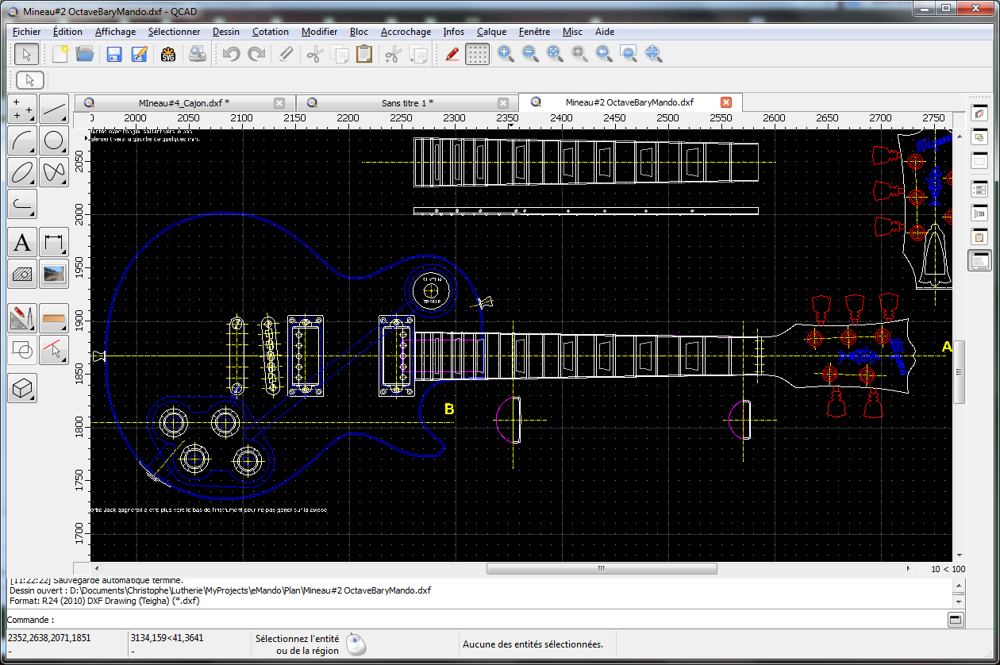
QCAD é um software de CAD 2D.
Ideal para criar e editar desenhos técnicos e projetos de engenharia.Saiba mais...
----------------------------------------------------------------------------------------------------
FreeCAD
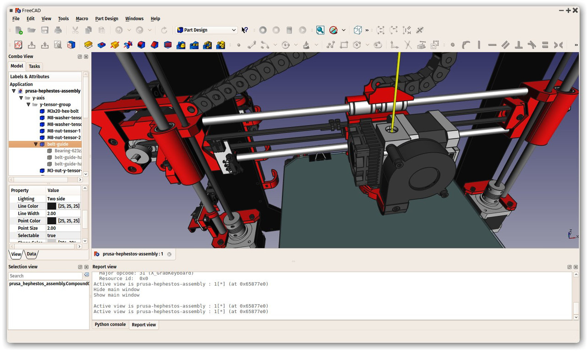
FreeCAD é um software de modelagem 3D.
Ideal para design paramétrico e engenharia, com uma interface flexível.Saiba mais...
Desenvolvimento
GB Studio
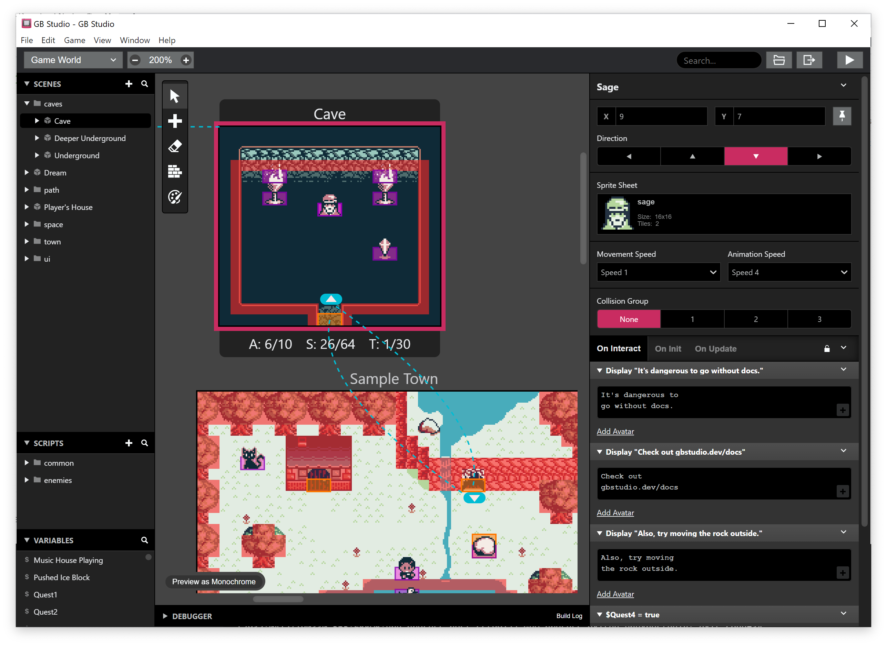
GB Studio é uma ferramenta de criação de jogos para Game Boy de código aberto.
Permite desenvolver jogos 2D sem necessidade de programação.Saiba mais...
----------------------------------------------------------------------------------------------------
Godot

Godot é um motor de jogo de código aberto para 2D e 3D.
Ideal para desenvolvedores que desejam criar jogos de maneira eficiente e flexível.Saiba mais...
----------------------------------------------------------------------------------------------------
VSCodium

VSCodium é uma versão do Visual Studio Code.
Sem a telemetria proprietária da Microsoft, é ideal para desenvolvedores que desejam uma IDE leve e personalizável.Saiba mais...
----------------------------------------------------------------------------------------------------
Neovim
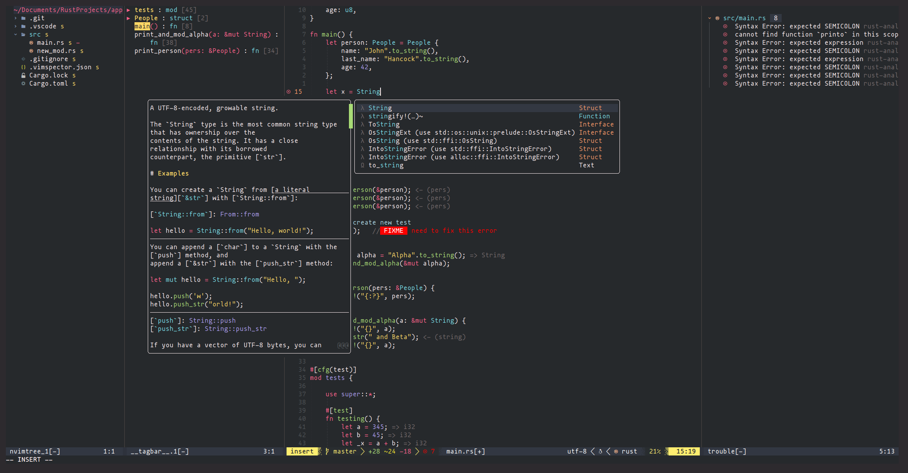
Neovim é um editor de texto extensível e altamente configurável.
Focado em desenvolvedores que desejam uma experiência de edição poderosa e eficiente.Saiba mais...
Educativos
MagicaVoxel

MagicaVoxel é um editor de voxel.
Ideal para criar e editar modelos 3D em estilo voxel de maneira intuitiva.Saiba mais...
----------------------------------------------------------------------------------------------------
leoCAD
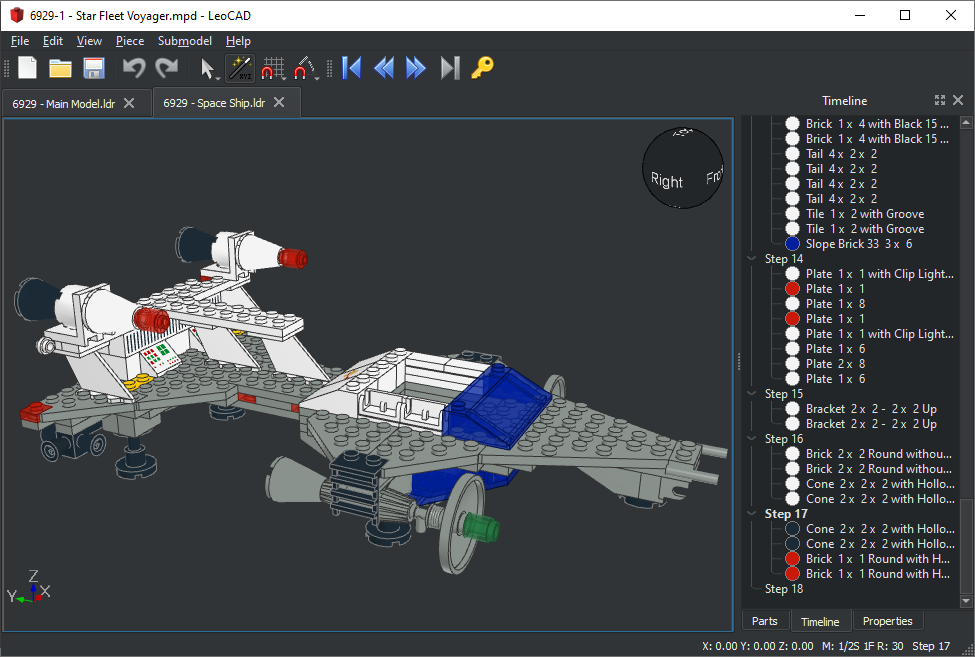
leoCAD é um software de modelagem 3D para construir com blocos LEGO.
Permite criar modelos digitais de forma intuitiva e divertida.Saiba mais...
----------------------------------------------------------------------------------------------------
Portugol Studio
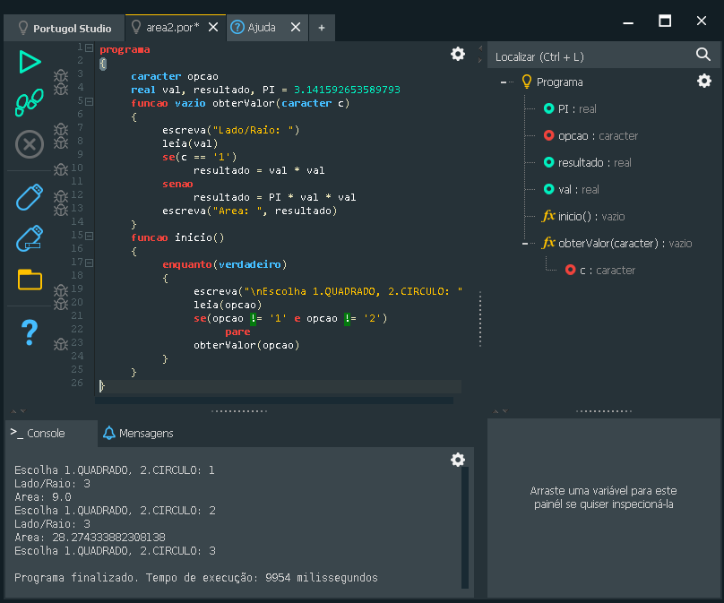
Portugol Studio é um ambiente de desenvolvimento para ensino de programação.
Ideal para iniciantes, permite programar em uma linguagem simples e didática.Saiba mais...
----------------------------------------------------------------------------------------------------
Scratch

Scratch é uma plataforma de programação visual para crianças.
Permite criar jogos, animações e histórias interativas de forma fácil e divertida.Saiba mais...
----------------------------------------------------------------------------------------------------
GeoGebra
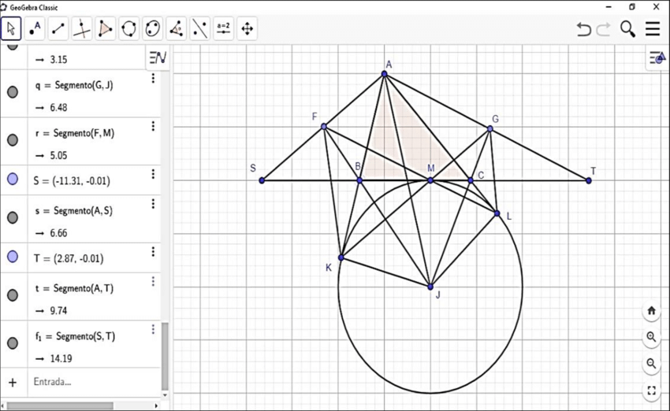
GeoGebra é uma ferramenta de matemática dinâmica.
Ideal para visualização e exploração de conceitos matemáticos em 2D e 3D.Saiba mais...
----------------------------------------------------------------------------------------------------
Step
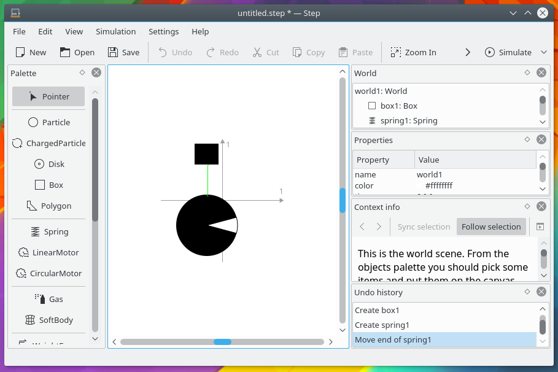
O Step do KDE Education é uma ferramenta educacional para simulações físicas e experimentos interativos.
Proporciona uma abordagem prática para o aprendizado de conceitos científicos.Saiba mais...
----------------------------------------------------------------------------------------------------
Kalzium
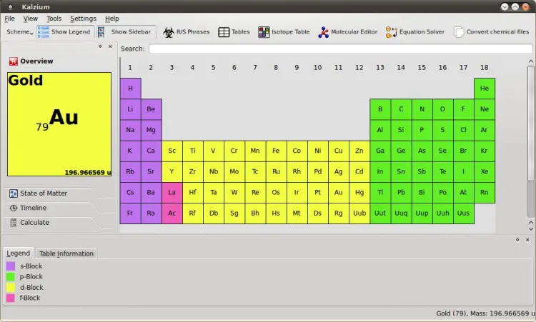
Kalzium é um software de tabela periódica e química.
Oferece informações detalhadas sobre elementos químicos e suas propriedades.Saiba mais...
----------------------------------------------------------------------------------------------------
Duolingo

Duolingo é uma plataforma de aprendizado de idiomas gratuita e interativa.
Oferece lições divertidas e gamificadas para aprender várias línguas.Saiba mais...
----------------------------------------------------------------------------------------------------
KGeography

KGeography é um software educacional de geografia.
Permite aprender sobre países, capitais e localização geográfica de forma interativa.Saiba mais...
----------------------------------------------------------------------------------------------------
KBrunch
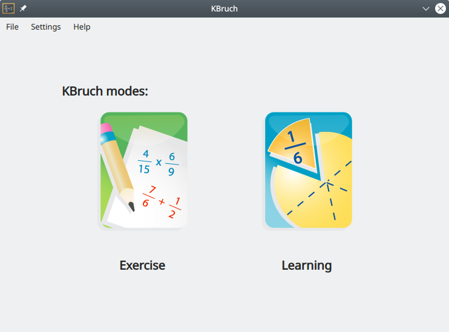
O KBruch é um software educacional para matemática.
Projetado para auxiliar no aprendizado de frações e cálculos matemáticos.Ele fornece uma abordagem interativa e visual para facilitar o entendimento.
Saiba mais...
----------------------------------------------------------------------------------------------------
KStars

KStars é um software de planetário.
Permite explorar o céu noturno com detalhes sobre estrelas, planetas e constelações.Saiba mais...
----------------------------------------------------------------------------------------------------
KTouch
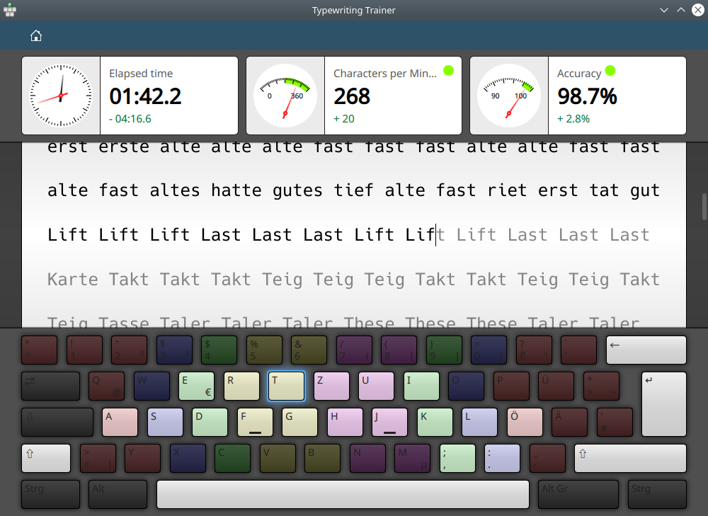
KTouch é um software de treinamento de digitação.
Ajuda a aprender e aprimorar suas habilidades de digitação de forma interativa.Saiba mais...
----------------------------------------------------------------------------------------------------
Minuet

Minuet é um software de aprendizado musical.
Ideal para ajudar a desenvolver habilidades de leitura de partituras e teoria musical.Saiba mais...
Jogos
GameHub
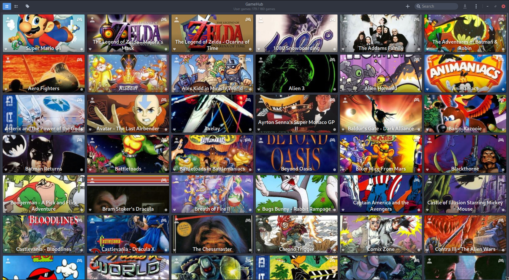
GameHub é uma plataforma de gerenciamento de jogos.
Permite organizar e jogar seus jogos de diversas plataformas em um só lugar. Com suporte a Emuladores e multiplayer.Saiba mais...
----------------------------------------------------------------------------------------------------
0 A.D.

0 A.D. é um jogo de estratégia em tempo real.
Focado em construir civilizações e batalhas históricas em um mundo antigo.Saiba mais...
----------------------------------------------------------------------------------------------------
Minecraft e ATLauncher

Minecraft é um jogo de construção e aventura em mundo aberto.
Permite explorar, construir e criar de maneira infinita em um ambiente 3D.Saiba mais...
----------------------------------------------------------------------------------------------------
Outros não listados.
Ajuda
Duvidas, problemas, instalação de programas e sugestões:
Email: felipe.neiva@ifg.edu.brWhatsApp: (62)99939-1667